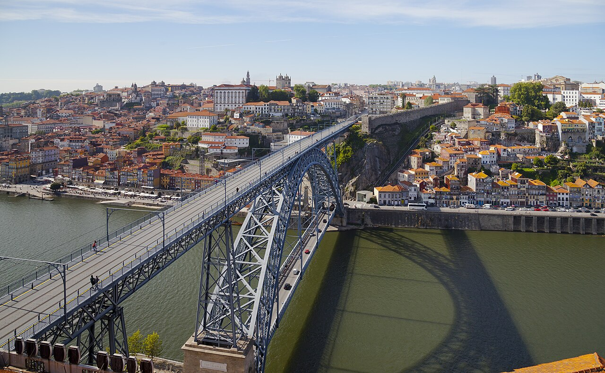
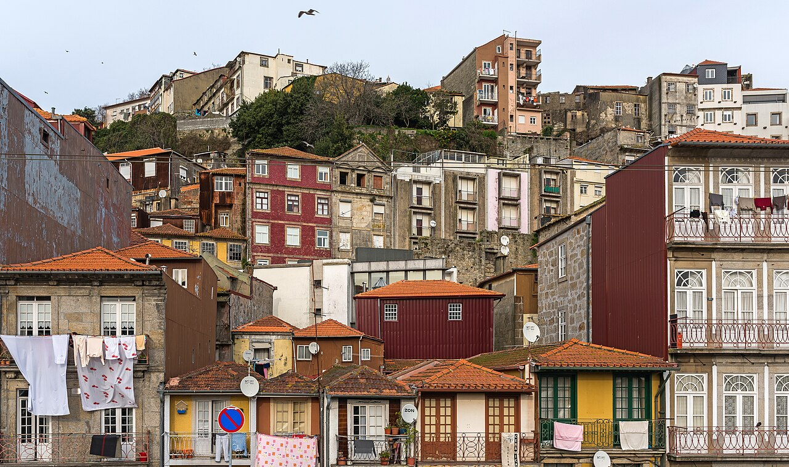
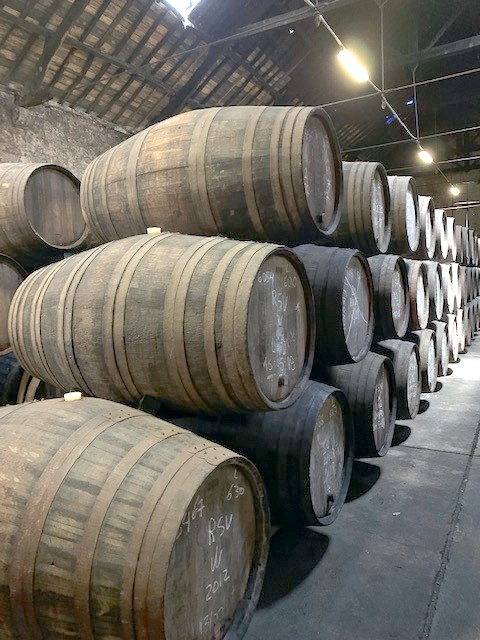

Flexible pace
More time for photographs, questions, coffee stops, or the places your group loves most.
Explore Porto with a private local guide and a walk shaped around the people you are traveling with, the stories you care about, and the time you have.
From two hours Price based on group size and itinerary
From a first introduction to a deeper themed walk, we tailor the experience without losing the relaxed, local spirit.
More time for photographs, questions, coffee stops, or the places your group loves most.
Understand Porto through its history, neighborhoods, traditions, and everyday life.
Leave with personal suggestions for restaurants, wine, viewpoints, and the rest of your stay.
A private walk gives us room to follow your curiosity. We bring the stories and local knowledge; you set the rhythm and help shape the route.
Share your date, timing, interests, ages, and anything that would make the day easier.
We recommend a route and format that makes sense—not a generic itinerary with your name on it.
Pause, ask, photograph, taste, and spend more time wherever the conversation takes you.
Every private tour is different, but these themes are excellent foundations.

Landmarks, river stories, viewpoints, and a strong sense of place.

Backstreets, details, local life, and quieter discoveries.

Food culture, port wine, markets, and honest local advice.

Riverside views, cellar history, port traditions, and Porto’s best skyline perspective.
Tell us your preferred date, group size, available time, and any interests or mobility considerations. We will suggest the best format.
“Our guide adapted the walk for three generations without losing any of the energy. Everyone felt included.”
“It felt thoughtful from the first message. We saw the icons, found quiet streets, and got brilliant dinner advice.”
“We had limited time and this was exactly the Porto we hoped to experience—warm, beautiful, and personal.”
Pricing depends on group size, duration, language, and the experience you choose. Send the basics and we’ll reply with a clear proposal before you commit.
Yes. A private tour is ideal for adapting pace, stops, and content. Porto is hilly, so tell us about mobility needs in advance.
Often, if your accommodation is centrally located. We’ll confirm whether that makes sense for the route.
We can build suggestions or selected stops into the plan, subject to timing, availability, and any additional costs.
Earlier is better for private tours, especially in busy months, but it is always worth asking about last-minute availability.
Send your date and group details. We’ll reply on WhatsApp with availability and options.